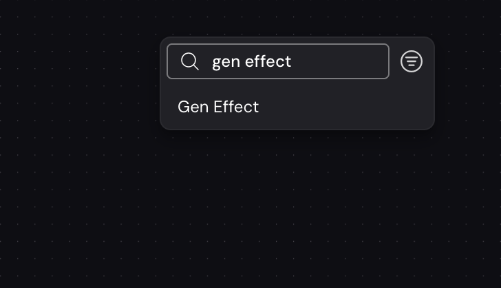
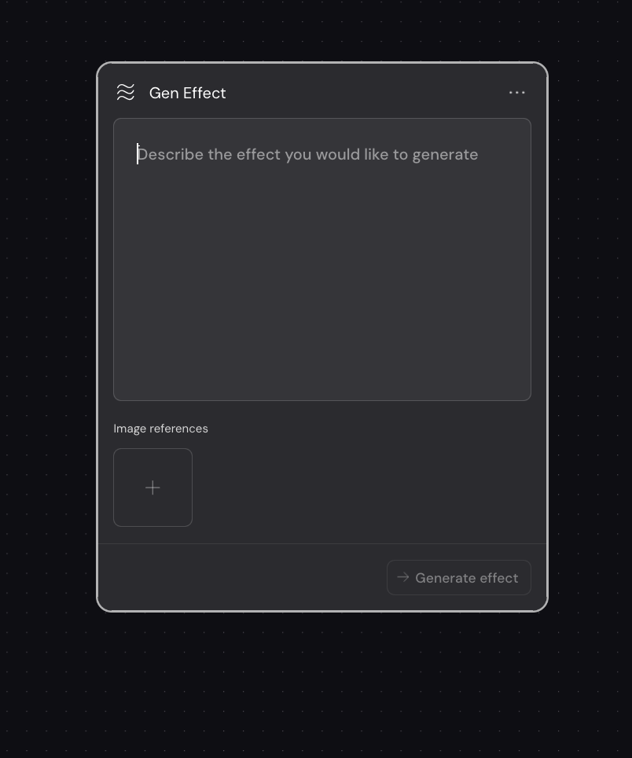
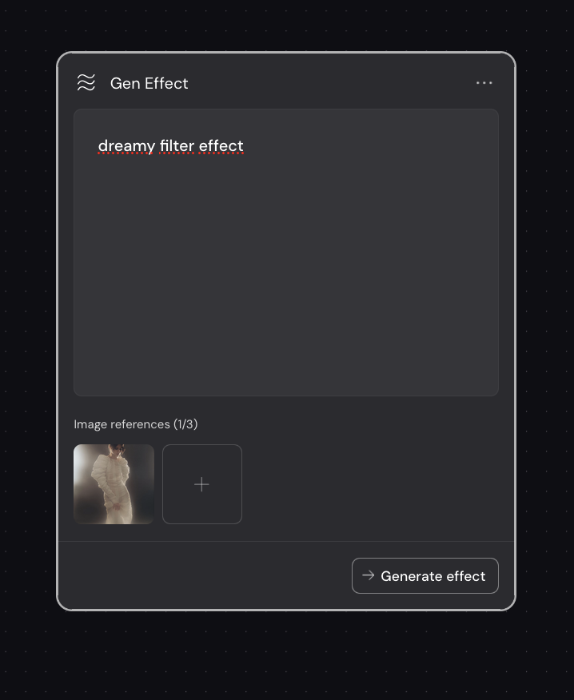
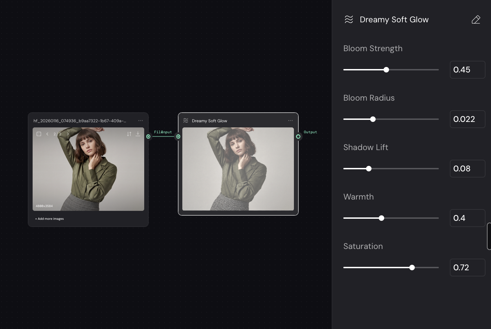

في العادة، لما تبي تأثير معيّن على صورتك، تدوّر على النود الجاهز اللي يعطيك إياه — وإذا ما لقيته، تتنازل عن الفكرة أو تركّب كم نود فوق بعض عشان توصل لشي قريب.
نود Gen Effect يقلب المعادلة: إنت تصف التأثير اللي في بالك، وWeavy يبني لك نود تأثير خاص فيك — ببـاراته وتحكّمه الكامل.
يعني ما تختار من قائمة. إنت اللي تصنع الأداة، وبعدين تشتغل فيه زي أي نود ثاني داخل الـ workflow.
وش تحتاج قبل ما تبدأ: حساب على Weavy، ومساحة عمل مفتوحة (flow). هذا الدليل ياخذك من الصفر لين تحصل نود تأثير شغّال وتحت سيطرتك.
اضغط كليك يمين في أي مكان فاضي على مساحة العمل، ويطلع لك مربع البحث. اكتب gen effect وبتلقاه أول نتيجة — اضغط عليه.

كليك يمين على الكانفس ← اكتب gen effect ← اختر النتيجة.
بيفتح لك النود وفيه مدخلين فقط:
- حقل الوصف — تكتب فيه التأثير اللي تبيه بالكلام.
- المراجع البصرية (Image references) — ترفع فيه صور تشرح الإحساس اللي تدوّر عليه، لين ثلاث صور.
وتحت، زر Generate effect — يشتغل لما تعطيه شي يشتغل عليه.

النود فاضي: حقل وصف فوق، ومراجع بصرية تحت.
03
اوصف التأثير — أو ورّه إياه
عندك ثلاث طرق، وكلها صحيحة:
- وصف بس — اكتب التأثير بكلماتك، مثل dreamy filter effect.
- مرجع بس — ارفع صورة فيها الإحساس اللي تبيه وخلّ Weavy يقرأها.
- الاثنين مع بعض — وهذي أدقّها. الكلمة تحدد النية، والصورة تحدد الذوق.
بعدها اضغط Generate effect.

وصف + صورة مرجعية واحدة. لاحظ العدّاد (1/3) — تقدر ترفع لين ثلاث صور.
04
استلم النود حقك وتحكّم فيه
Weavy يحلل اللي أعطيته إياه، وبعدها يبني لك نود تأثير جاهز باسمه الخاص — في مثالنا طلع Dreamy Soft Glow — ومعه مجموعة بارات تتحكم فيها بنفسك.
وصّل صورتك بمدخل FileInput، وحرّك البارات لين توصل للي تبيه بالضبط. من هنا وطالع، هو نود عادي داخل الـ workflow: تنسخه، تعيد استخدامه، وتوصله بأي نود ثاني.

النود النهائي ومعه باراته: Bloom Strength · Bloom Radius · Shadow Lift · Warmth · Saturation. البارات تختلف حسب التأثير اللي طلبته.
تحكّم بدل مفاجآت
التوليد العادي يعطيك نتيجة وخلاص. هنا تطلع لك بارات — تعدّل، تخفف، تزوّد، لين تضبط.
ثبات في اللوك
نفس النود على عشرين صورة يعطيك نفس المعالجة. هذا اللي يخلي شغلك يبان حملة واحدة، مو صور متفرقة.
أصول تتراكم
كل تأثير تبنيه يصير قطعة تملكها وترجع لها. مع الوقت تبني مكتبة تأثيرات خاصة فيك ما عند أحد غيرك.
الملاحظة الأهم: Gen Effect نود واحد في أداة واحدة. القيمة الحقيقية ما تجي من إتقان نود — تجي لما تعرف كيف تربط الأدوات مع بعض في نظام يشتغل لك كل يوم.
اوصف الإحساس، مو الإعدادات
soft dreamy glow with lifted shadows أوضح بكثير من «زوّد البلوم ٤٥٪». خلّ Weavy يترجم النية لبارات — هذي شغلته.
اختر المرجع بعناية
صورة مرجعية وحدة قوية أفضل من ثلاث صور متناقضة. لو رفعت ثلاث، خلّها كلها تشاور على نفس الاتجاه.
ابنِ نسخ، لا تدمّر الأصل
إذا ضبط لك نود، انسخه قبل ما تجرّب عليه. الأصل يبقى مرجع، والنسخة هي اللي تلعب فيها.
جرّبه على الـ workflow الجاهز
فتحت لك نفس مساحة العمل اللي في الصور — افتحها، وصّل صورتك، وشوف الفرق بنفسك قبل ما تبني وحدة من الصفر.
افتح الـ Workflow في Weavy
MA Learn · ورشة مباشرة
تعلّمت نود. تخيّل لو تعلّمت النظام كامل.
Gen Effect خطوة صغيرة داخل شي أكبر بكثير. في ورشة «معادلة صناعة الإلهام» ما نعلّمك أداة — نبني معك إطار عمل كامل يخليك تنتج بثبات، وبجودة تقدر تبيعها.
- تبني نظامك الإبداعي بالذكاء الاصطناعي من الصفر، خطوة بخطوة
- ورشة مباشرة
- تطبيق عملي على بريف عميل
- مقاعد محدودة عشان كل واحد ياخذ حقه من المتابعة
اعرف تفاصيل الورشة
المقاعد محدودة لكل دفعة — التفاصيل والمواعيد المحدّثة على الصفحة.